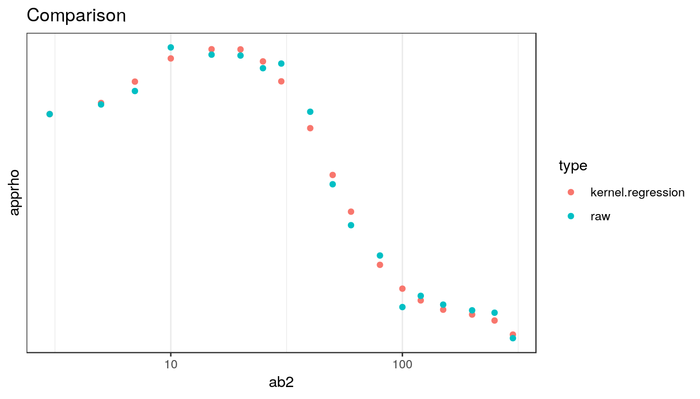

VES Smoothing using the rves package
Oscar Garcia-Cabrejo
2018-07-16
rves-smoothing.RmdIntroduction
Vertical Electrical Sounding (VES) is one of the oldest resistivity methods and its the main geophysical method used in groundwater exploration due to its cost and investigation depth. In a VES, measurements of apparent resistivity are taked for different values of node spacing. As in any measurement of a physical property, the values of apparent resistivity sometimes include some degree of noise which is an obstacle for a proper parameter estimation (thicknesses and real resistivities). Given the ubiquity of noise in measurements of the apparent resistivities, there are no predefined methodologies to remove the noise ocurring in VES. In the rves package, the noise removal problem is solved using smoothing techniques where the main goal is to extract a smooth curve from a set of measurements. There are several smoothing techniques that can be used to filter or smooth the apparent resistivity measurements, but they do not have a widespread use. Therefore in this package three smoothing techniques are included to help in the pre-processing of the VES measurements and improve the inversion process. The three smoothing techniques are smoothing spline, kernel regression and wavelet thresholding.
Basic Concepts
Smoothing via splines
In this section a basic introduction to smoothing using spline is given. More details about this procedure can be found in Green and Silverman (1994). Let \(\{x_{i},\rho_{\text{app},i}:i=1,\ldots.n\}\) be a set of measurements of electrode spacing \(x\) and apparent resistivity \(\rho_{\text{app}}\) in what is called a VES (Vertical Electrical Sounding). It is assumed that the measurements of apparent resistivity are described by a model \(\rho_{\text{app},i}=\hat{\rho}_{\text{app},i} + \epsilon_{i}\) where \(\epsilon_{i}\) are a set of independent random variables with zero mean and constant variance, and \(\hat{\rho}_{\text{app},i}\) is a cubic smoothing spline that approximates the measurements \(\rho_{\text{app},i}\). This cubic spline is a third order polynomial defined as: \[ \hat{\rho}_{\text{app},i}(x) = a_{i}(x-x_{i})^{3}+b_{i}(x-x_{i})^{2} + c_{i}(x-x_{i}) + d_{i} \] where \(a_{i},b_{i},c_{i}\) and \(d_{i}\) are fixed coefficients that can be estimated from the measured data. The coefficients of the function \(\hat{\rho}_{\text{app},i}\) can be estimated as the minimum of: \[ \sum\limits_{i=1}^{n}[\rho_{\text{app},i}-\hat{\rho}_{\text{app},i}]^{2} + \lambda \int \hat{\rho}_{\text{app}}^{''}(x)^{2}dx \] where \(\lambda\) is the smoothing parameter, and the function \(\hat{\rho}_{\text{app},i}\) is assumed as continuous with at least second order derivative. The previous equation aims at defining a function that approximates the measured values (first term) while minimizing the roughness of the estimated function (second term). This tradeoff is controlled by the \(\lambda\) parameter that is called the smoothing parameter. If \(\lambda \rightarrow 0\) then there is no smoothing and the spline interpolation is obtained. If \(\lambda \rightarrow \infty\) then all the weight is given to the roughness penalty and a least-squares estimate is obtained.
Smoothing via Kernel Regression
Another approach to smooth the VES data is to use local polynomial regressions. This is a well known statistical procedure and more information can be found in Kloke and McKean (2015). In this approach, the function that approximates the apparent resistivity measurements is a polynomial of order \(p\) defined as: \[ \hat{\rho}_{\text{app},i}(x) = a_{0} + a_{1}(x-x_{i})+\frac{a_{2}}{2!}(x-x_{i})^{2} + \ldots + \frac{a_{p}}{p!}(x-x_{i})^{p} \] where the \((a_{i},i=0,\ldots,p)\) are fixed coefficients that are estimated by minimizing: \[ \sum_{i=1}^{n}w_{i}(x)[\rho_{\text{app}}(x_{i})-\hat{\rho}_{\text{app},i}(x)]^{2} \]
The coefficientes \(a_{i}\) can be estimated using weighted linear least-squares: \[ \boldsymbol{a}=(\boldsymbol{X}_{X}^{T} \boldsymbol{W}_{X} \boldsymbol{X}_{X})^{-1} \boldsymbol{X}_{X}^{T}\boldsymbol{W}_{X}\boldsymbol{Y} \] where the matrix \(\boldsymbol{X}_{X}\) is defined as: \[ \boldsymbol{X}_{X}=\left[ \begin{array}{cccc} 1& (x-x_{1})& \cdots& \frac{(x-x_{1})^{p}}{p!}\\ 1& (x-x_{2})& \cdots& \frac{(x-x_{2})^{p}}{p!}\\ \vdots& \vdots& \cdots& \vdots\\ 1& (x-x_{n})& \cdots& \frac{(x-x_{n})^{p}}{p!}\\ \end{array} \right] \] and the weight matrix is given by: \[ \boldsymbol{W}_{X}=\left[ \begin{array}{cccc} w(x_{1})& 0& \cdots & 0 \\ 0& w(x_{2})& \cdots & 0 \\ \vdots& \vdots& \vdots& \vdots \\ 0& 0& \cdots & w(x_{n}) \end{array} \right] \]
Smoothing via Wavelet Shrinkage
Another approach to smoothing comes from the signal processing community using the wavelet transform as proposed by (Taswell 2000). Let \(\{x_{i},\rho_{\text{app},i}:i=1,\ldots.n\}\) be a set of measurements of a VES ( electrode spacing \(x\) and apparent resistivity \(\rho_{\text{app}}\)). Again it is assumed that the measurements of the apparent resistivity \(\rho_{\text{app},i}^{m}\) are given by: \[ \rho_{\text{app},i}^{m}(x) = \hat{\rho}_{\text{app},i}(x) + \epsilon(x) \] where \(\hat{\rho}_{\text{app},i}(x)\) are the true values of the apparent resistivity and \(\epsilon(x)\) is a noise component that needs to be filtered. Let \(W[\cdot]\) and \(W^{-1}[\cdot]\) be the forward and inverse wavelet tranform operators, and \(D[\cdot,\lambda]\) the denoising operator defined in terms of the \(\lambda\) parameter. The smoothing procedure using wavelet shrinkage has three steps:
- Calculate the wavelet transform of the measured apparent resistivity curve: \[ Y = W[\rho_{\text{app},i}^{m}(x)] \]
- Apply the denoising operator to the wavelet transform of the measured resistivity: \[ Z=D[Y,\lambda] \]
- Calculate the inverse wavelet transform of the denoised wavelet transform: \[ \hat{\rho}_{\text{app},i}(x)= W^{-1}[Z] \] As seen in the previous equations, the key of this smoothing technique is the definition of the \(\lambda\) parameter called shinkring parameter. As its name suggets, the role of \(\lambda\) is to shrink the magnitude of the wavelet transform of a signal \(U\) using the following rule:
\[ D[U,\lambda]=\text{sgn}{(U)} \max{(0,|U|-\lambda)} \]
The action of this operator is to nullify the values of \(U\) for which \(|U| < \lambda\), and reduce the values of \(U\) to \(|U|-\lambda\) in the case that \(|U| > \lambda\). The small values of \(U\) are associated with the high frequency variations in the signals, in other words, this variations are called noise. A similar approach has been used by (Raj et al. 2016) to denoise VES curves.
Example
VES 1
The first step in the interpretation of a VES is to load the rves package:
library(rves)For this example, the VES ves_data1 included in the package is used to test the different functions included in rves:
data("ves_data1")The electrode spacing and the apparent resistivity values are defined:
ab2 <- ves_data1$ab2
apprho <- ves_data1$apprhoand these are used to define the VES object inside R:
sev1a <- ves(id= "VES1", ab2 = ab2, apprho = apprho)The plot of the VES used as example can be seen in the following plot:
p1 <- plot(sev1a, type = "ves")Smoothing via splines
The smoothing of the VES1 using smoothing splines is achieved using the smoothing_ves function:
res.ss <- smoothing_ves(sev1a, method = "smooth.spline")Now the results of the smoothing procedure are extracted and assigned to a data.frame:
ab2.def <- rep(res.ss$ab2, 2)
apprho.def <- vector('numeric', length = 36)
apprho.def[1:18] <- res.ss$apprho
print(length(sev1a$appres))
#> [1] 18
apprho.def[19:36] <- sev1a$appres
meas.type <- vector('character', length = 36)
meas.type[1:18] <- rep("smooth.spline", 18)
meas.type[19:36] <- rep("raw", 18)
res.ss.df <- data.frame(ab2 = ab2.def, apprho = apprho.def,
type = as.factor(meas.type))A comparison of the measured and smoothed apparent resistivity values are seed in the following figure, where it is evident that there are small differences between the resistivity values. The smoothing procedure using splines corrects the values at intermediate and large spacings.
p.ss <- ggplot() + geom_point(aes(x = ab2, y = apprho, color = type),
data = res.ss.df) +
scale_x_log10() +
scale_y_log10() +
ggtitle('Comparison') +
theme_bw()
print(p.ss)  Now, the smoothed resistivity values are used to define a new ves object:
Now, the smoothed resistivity values are used to define a new ves object:
sev1ss <- ves(id = "Sounding 1-Smoothing Spline", ab2 = res.ss$ab2,
apprho = res.ss$apprho)The initial solution for the calibration procedure are defined as follows:
rho <- c(40,70,30, 20)
thick <- c(2,10,50,500)
par0 <- c(rho, thick)and the true resistivities and layer thicknesses are estimated using the conventional nonlinear least-squares approach:
res.ss.nls <- calibrate_nls(sev1ss, par0, iterations = 10, ireport = 5)
#> iteration, RSS, Rel Error = 0 0.002201384 3.110148
#> iteration, RSS, Rel Error = 5 0.0003970715 1.267168
#> iteration, RSS, Rel Error = 9 0.0002212703 0.9438456The results of the calibration are assigned to the ves object
sev1ss$rhopar <- res.ss.nls$rho
sev1ss$thickpar <- res.ss.nls$thickness
sev1ss$interpreted <- TRUEand the results are plotted.
p3 <- plot(sev1ss, type = "ves")
print(p3) In this case the change in the shape of the ves curve is not significative, but the effect of the filtering is seen in the reduction of the RMS obtained during calibration that changed from \(1.35\) (no smoothing) to \(0.81\) (smoothing.spline). The number of layers of the inverted model did not change but there are small variations in the layer resistivities.
In this case the change in the shape of the ves curve is not significative, but the effect of the filtering is seen in the reduction of the RMS obtained during calibration that changed from \(1.35\) (no smoothing) to \(0.81\) (smoothing.spline). The number of layers of the inverted model did not change but there are small variations in the layer resistivities.
Kernel Regression
Now, let’s try kernel regression. This procedure can be applied to the original ves object using the smoothing_ves function with the kernel.regression option and the corresponding bandwidth:
res.kr <- smoothing_ves(sev1a, method = "kernel.regression", bw = 0.5)For effects of the ves smoothing it is recommended to try different values of bw in the interval from \(0.1\) to \(0.7\).
Once the results are obtained, a data.frame is created to compare the effect of the smoothing:
ab2.def <- rep(res.kr$ab2, 2)
apprho.def <- vector('numeric', length = 36)
apprho.def[1:18] <- res.kr$apprho
apprho.def[19:36] <- sev1a$appres
meas.type <- vector('character', length = 36)
meas.type[1:18] <- rep("kernel.regression", 18)
meas.type[19:36] <- rep("raw", 18)
res.kr.df <- data.frame(ab2 = ab2.def, apprho = apprho.def,
type = as.factor(meas.type))and the results are plotted:
p.kr <- ggplot() + geom_point(aes(x = ab2, y = apprho, color = type),
data = res.kr.df) +
scale_x_log10() +
scale_y_log10() +
ggtitle('Comparison') +
theme_bw()
print(p.kr)  As seen in the smooth.spline case, the effect of the filtering is visible for intermediate to large spacings. With the filtered values, a new ves object is defined:
sev1kr <- ves(id = "Sounding 1-Kernel Regression", ab2 = res.kr$ab2,
apprho = res.kr$apprho)and the estimates of the real resistivities and thicknesses is obtained:
res.kr.nls <- calibrate_nls(sev1kr, par0, iterations = 10, ireport = 5)
#> iteration, RSS, Rel Error = 0 0.002041967 3.017298
#> iteration, RSS, Rel Error = 5 0.0002895334 1.084667
#> iteration, RSS, Rel Error = 9 0.0001384567 0.7404027The calibration results are assigned to the ves object using
sev1kr$rhopar <- res.kr.nls$rho
sev1kr$thickpar <- res.kr.nls$thickness
sev1kr$interpreted <- TRUEand the results are finally plotted:
p4 <- plot(sev1kr, type = "ves")
print(p4) Again the effect of the smoothing is seen in the reduction of the RMS obtained during the calibration that now reaches a values of \(0.628\) (down from \(1.35\)). The number of layers did no change but there are small differences in the resistivities obtained during the calibration step when compared to the results of the smoothing spline and no smoothing.
Again the effect of the smoothing is seen in the reduction of the RMS obtained during the calibration that now reaches a values of \(0.628\) (down from \(1.35\)). The number of layers did no change but there are small differences in the resistivities obtained during the calibration step when compared to the results of the smoothing spline and no smoothing.
Wavelet Smoothing
The third method for ves smoothing is wavelet thresholding which is applied in a similar manner to the previously explained methods:
res.wv <- smoothing_ves(sev1a, method = "wavelet")The results of the smoothing are assigned to a data.frame for visual comparison with the original values
ab2.def <- rep(res.wv$ab2, 2)
apprho.def <- vector('numeric', length = 36)
apprho.def[1:18] <- res.wv$apprho
apprho.def[19:36] <- sev1a$appres
meas.type <- vector('character', length = 36)
meas.type[1:18] <- rep("wavelet.thresholding", 18)
meas.type[19:36] <- rep("raw", 18)
res.wv.df <- data.frame(ab2 = ab2.def, apprho = apprho.def,
type = as.factor(meas.type))and this data.frame is plotted
p.wv <- ggplot() + geom_point(aes(x = ab2, y = apprho, color = type),
data = res.wv.df) +
scale_x_log10() +
scale_y_log10() +
ggtitle('Comparison') +
theme_bw()
print(p.wv) where it is clear that the smoothing modified values for all spacings. These results are used to define a new ves object:
sev1wv <- ves(id = "Sounding 1-Wavelet Thresholding", ab2 = res.wv$ab2,
apprho = res.wv$apprho)which in turn is used to estimate the layer parameters:
res.wv.nls <- calibrate_nls(sev1wv, par0, iterations = 10, ireport = 5)
#> iteration, RSS, Rel Error = 0 0.002237578 3.160632
#> iteration, RSS, Rel Error = 5 0.000316812 1.213085
#> iteration, RSS, Rel Error = 9 0.000125947 0.7301994The results of the calibration are assigned again to the ves object:
sev1wv$rhopar <- res.wv.nls$rho
sev1wv$thickpar <- res.wv.nls$thickness
sev1wv$interpreted <- TRUEand finally the results are plotted.
p5 <- plot(sev1wv, type = "ves")
print(p5)
The effect of the smoothing is seen in the reduction of the RMS to a value of \(0.602\), which is the smallest rms value obtained so far. In addition the resistivity of the third layer is less than the corresponding value estimated with the smoothing spline, kernel regression and no smoothing; whereas there is an increase in the true resistivity of the second layer. Despite these differences, the layered model did not change in a significant way.
References
Green, PJ, and BW Silverman. 1994. Nonparametric Regression and Generalized Linear Models: A Roughness Penalty Approach. United Kingdom: Chapman & Hall.
Kloke, John., and Joseph W. McKean. 2015. Nonparametric Statistical Methods Using R /. Chapman & Hall/Crc the R Series. Boca Raton, Florida : CRC Press,
Raj, A. Stanley, D. Hudson Oliver, Y. Srinivas, and J. Viswanath. 2016. “Wavelet Denoising Algorithm to Refine Noisy Geoelectrical Data for Versatile Inversion.” Modeling Earth Systems and Environment 2 (1). Springer Nature. doi:10.1007/s40808-016-0091-0.
Taswell, C. 2000. “The What, How, and Why of Wavelet Shrinkage Denoising.” Computing in Science & Engineering 2 (3). Institute of Electrical; Electronics Engineers (IEEE): 12–19. doi:10.1109/5992.841791.